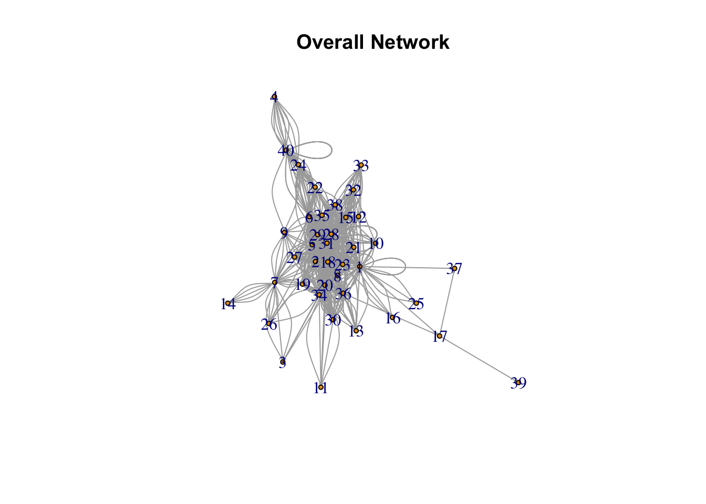
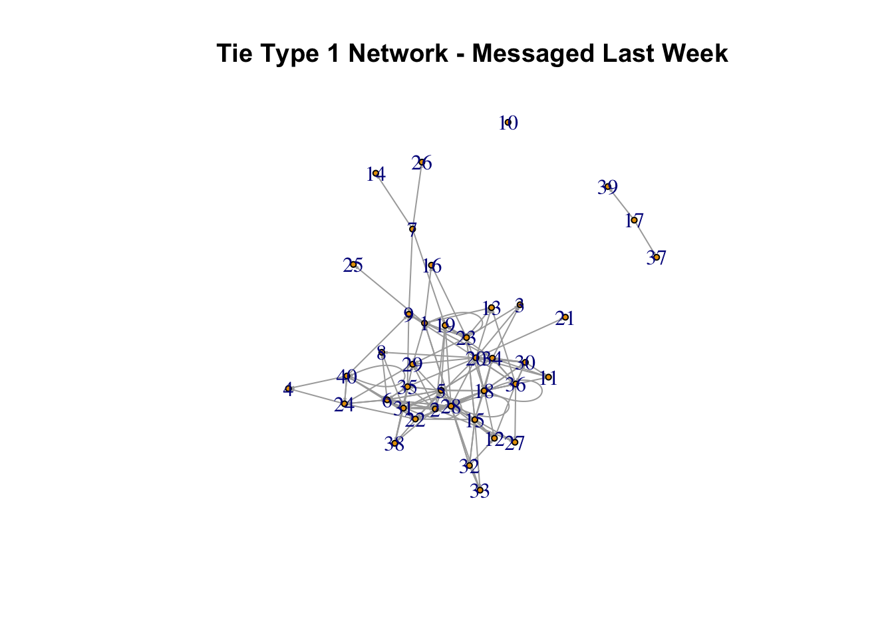
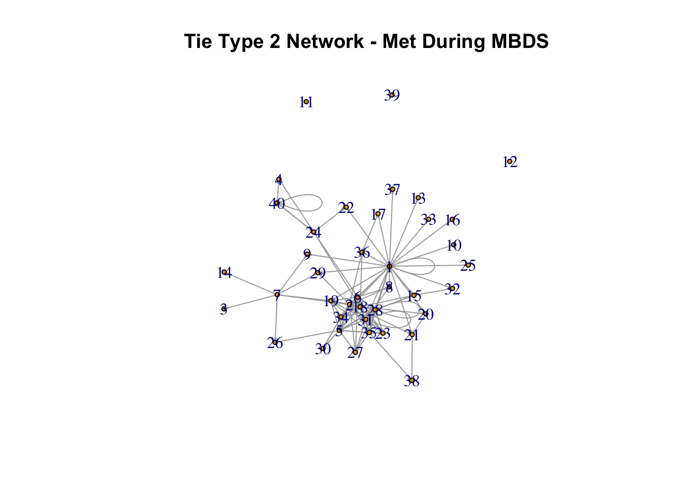
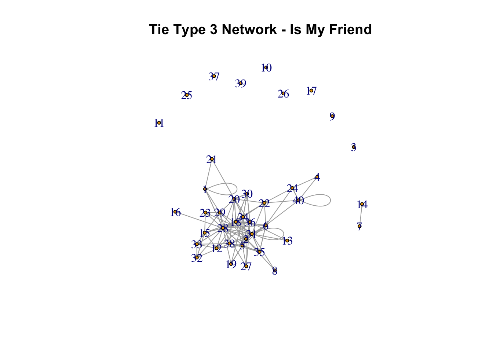
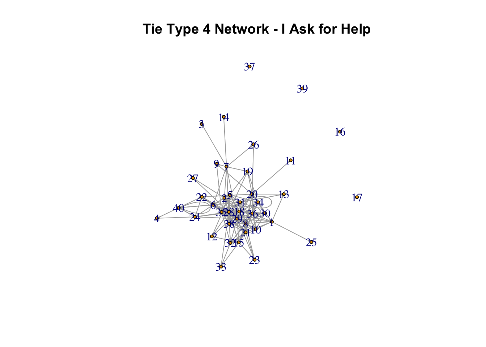
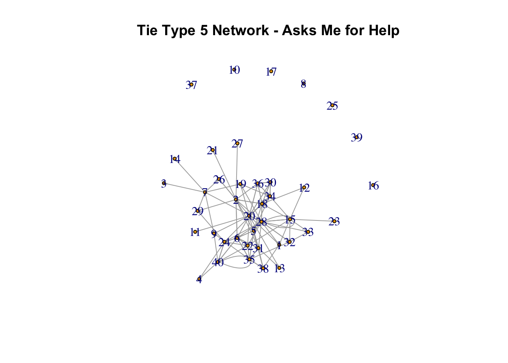
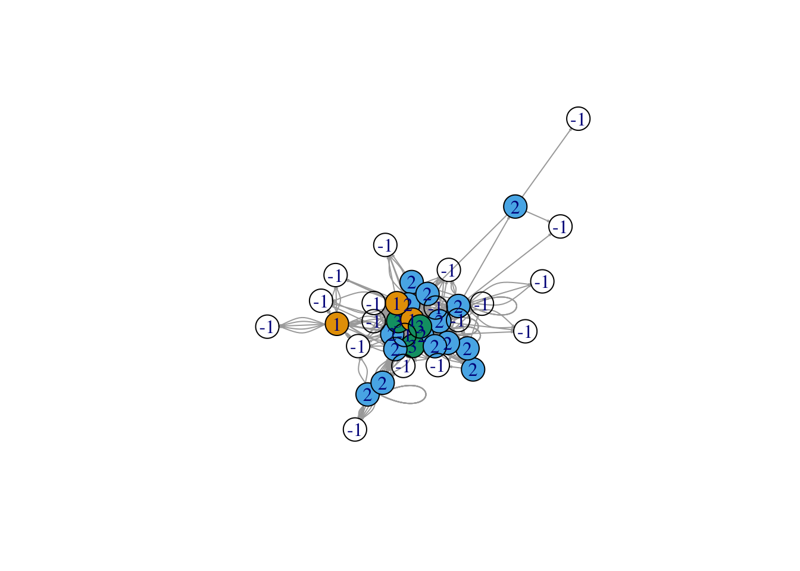

Group Members: Arvind Bala, Ben Brikman, Jimena Velazquez, Minglu Xu, Eva Zhang
We prepared the data for the network analysis by creating a separate edge and node list.
Calculate measures of centrality and similarity in networks depending on tie-type? Which tie type generates the most similar network in terms of introversion? Which tie type is the most dissimilar?
Network Visualization by Tie Type
We start our analysis by visualizing the overall network and the 5 networks filtered by the 5 tie types. It’s interesting to observe that networks based on tie type 3, 4, 5 have relatively more isolated nodes. These ties describes friendships and relations of asking/being asked for help. Perhaps remote learning has impacted people’s ability to make friends in the program.

Network Centrality Measures by Tie Type
We then calculate measures centrality. We present results from centrality and edge density, since their results are easier to interpret.
Among the networks based on 5 tie types, type 4 (I ask for help) has the highest measures of centrality. Type 5 (Asks me for help) has one of the lowest measures of centrality.
## Overall network centralization: 0.7737179## Overall network edge density: 0.4570513## Tie type 1 network centralization: 0.1615385## Tie type 1 network edge density: 0.09487179## Tie type 2 network centralization: 0.1942308## Tie type 2 network edge density: 0.08782051## Tie type 3 network centralization: 0.1442308## Tie type 3 network edge density: 0.08653846## Tie type 4 network centralization: 0.2955128## Tie type 4 network edge density: 0.1147436## Tie type 5 network centralization: 0.1576923## Tie type 5 network edge density: 0.07307692Network Similarity Measures by Tie Type
Next, we calculate assortativity to determine which network generates the most similar network, most similar network based on introversion, and most dissimilar network based on introversion.
Overall, type 1 network (texted last week) has high measure of similarity.
Type 1 network also generates the most similar network in terms of introversion, since it has the highest introversion-based assortativity value 0.1348994.
Tie Type 3 (is my friend) is the most dissimilar network in terms of introversion since it has the lowest introversion-based assortativity value -0.02886641. This means people are friends with each other regardless of whether they are introverted or not.
## Overall network assortativity: 0.07348968## Overall network assortativity based on Extraversion/Introversion: 0.0348225## Tie type 1 network assortativity: 0.1228057## Tie type 1 network assortativity based on Extraversion/Introversion: 0.1348994## Tie type 2 network assortativity: -0.2405615## Tie type 2 network assortativity based on Extraversion/Introversion: -0.0183015## Tie type 3 network assortativity: 0.02809497## Tie type 3 network assortativity based on Extraversion/Introversion: -0.02886641## Tie type 4 network assortativity: -0.1294851## Tie type 4 network assortativity based on Extraversion/Introversion: 0.01731216## Tie type 5 network assortativity: -0.06440357## Tie type 5 network assortativity based on Extraversion/Introversion: 0.06063195Do introverts tend to be at the periphery while extroverts are in the center of the network?
Note: 1 means introverted, 2 means middle ground, 3 means extroverted, and -1 means omitted response.
First, we calculated the average of closeness and betweenness grouped by level of extroversion. Higher betweeness means more connected and higher closeness means nodes are more closely connected. Based on our very limited sample, introverted people in our class have high betweenness and low closeness, while extroverted people have low betweeness and slightly higher closeness.
We also graphed the overall network, colored by level of extroversion. Based on the nodes of this graph, we can clearly see that, the very few people who identify themselves as extroverted (3) are in the center of the network. Middle-ground people (2) are typically just outside the very center of the network Out of the three introverted individuals (1), two are also quite in the center of the network, and only one of them is rather on the periphery.
Overall, it is inconclusive if introverts tend to be on the periphery, while extroverts are more likely to be in the center. That said, our data set has very limited information, with half of the respondents omitting answers to this question and only a few people who identify themselves as either 1 or 3; the vast majority of people identified themselves as middle ground.
## # A tibble: 4 x 3
## Extraversion betweeness_mean closeness_mean
## * <chr> <dbl> <dbl>
## 1 1 39.5 0.0146
## 2 2 38.6 0.0145
## 3 3 24.9 0.0160
## 4 <NA> 0 0.0123